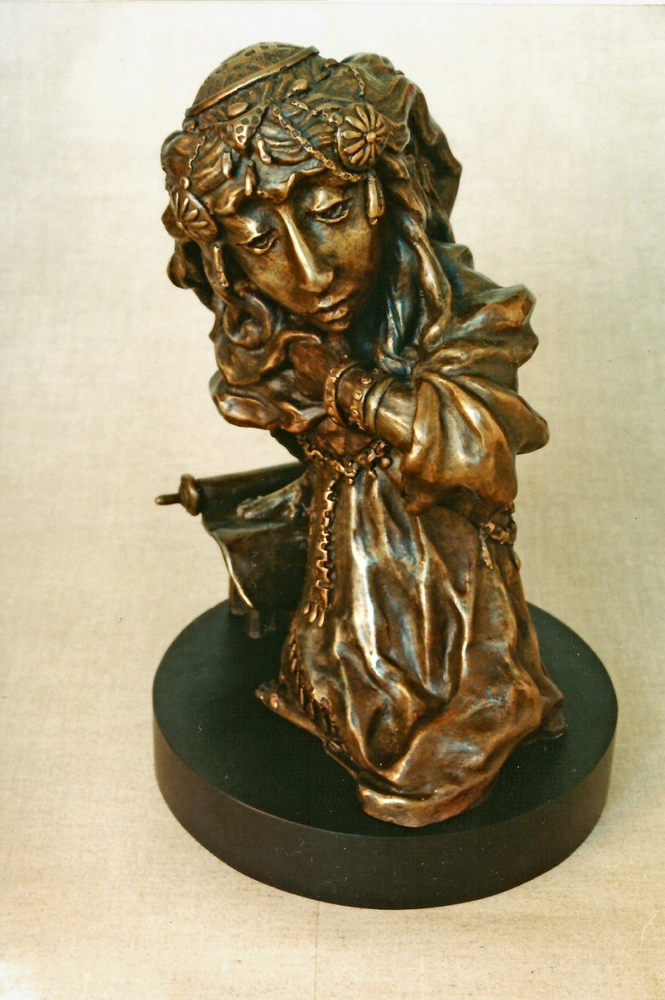
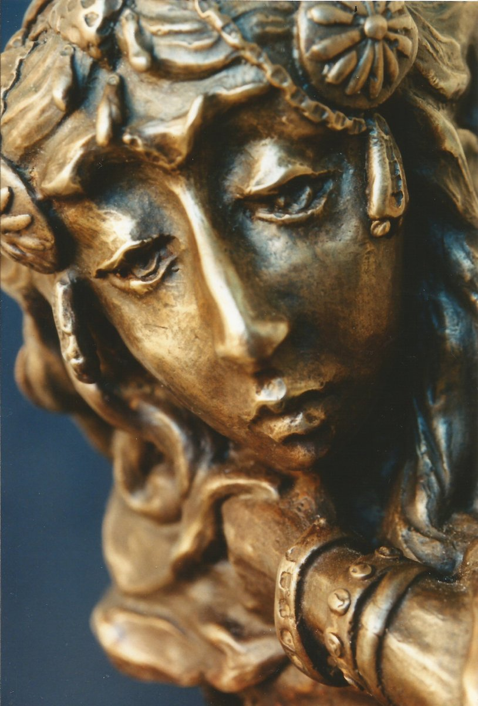
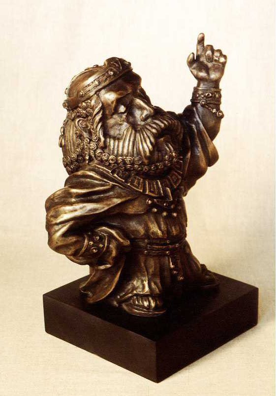
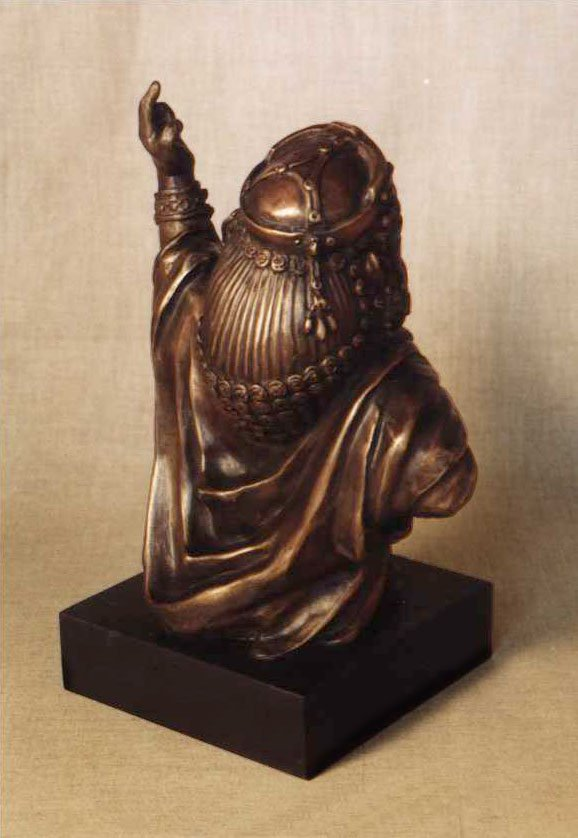
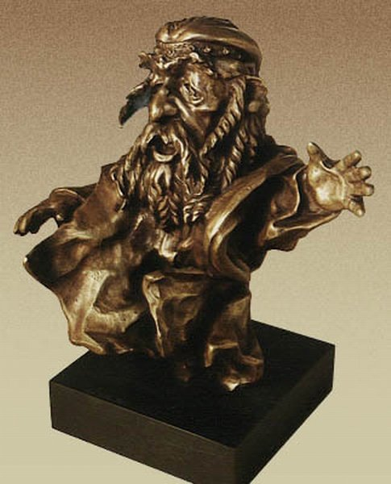
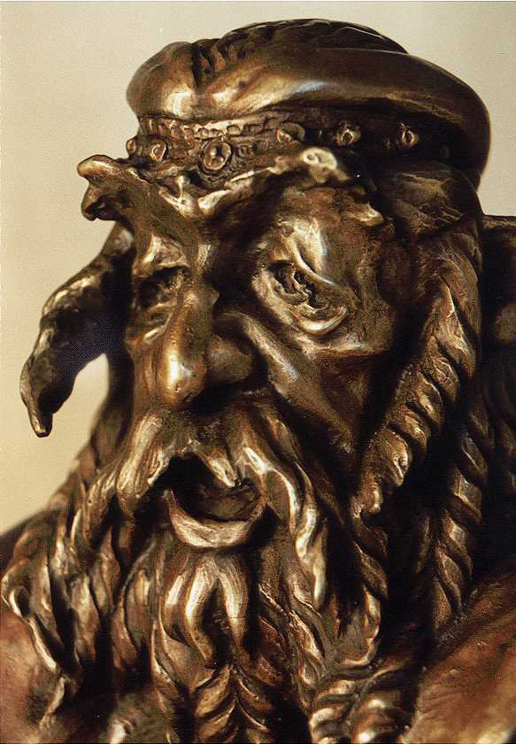
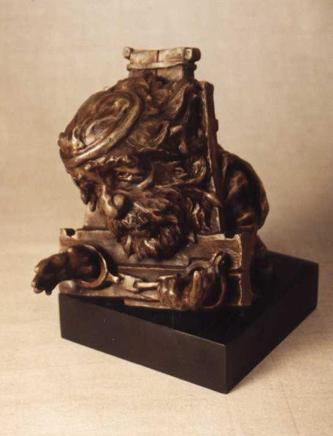
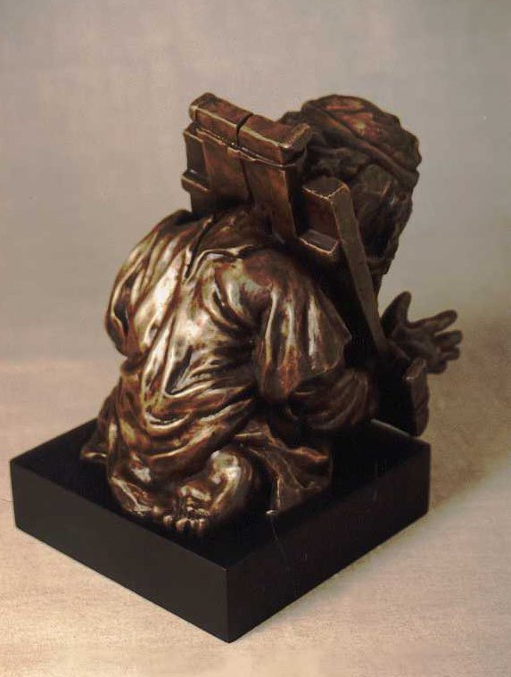
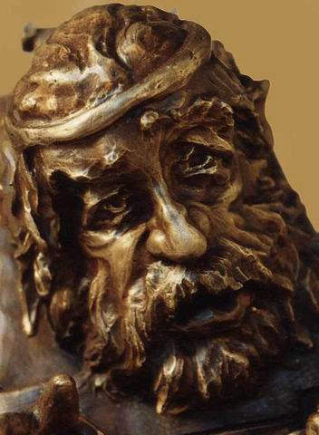

Мои Работы - Герои Библии
Герои Библии – мои родственники. Их судьбы и история Израиля - это история моих предков и моя судьба.
В свете разных традиций мужи и жены веры предстают пред нами исполинами духа. Патина времени покрывает их образы, как бы удаляя их от нас до того, что они становятся недосягаемой легендой. Многовековые слои «лака» и «золотых рам», в которые облекает их наше воображение, делает их идеальными и «неприкосновенными».
Из-за отдаленности событий они часто превращаются в сказочных героев, в легенды, становятся мифом. Но на самом деле, несмотря на то, что они жили тысячи лет назад, они были такие же реальные люди, как вы и я. Я вижу в них своих предков.


Патриархи, судьи, цари и пророки действительно были людьми чрезвычайных качеств. Но все они были также обычными земными людьми. То, что делало их великими, - не их сила и власть, но слава Божья, покрывающая их. Когда Дух Божий сходил на них, они становились мудрыми, сильными и храбрыми, творили чудеса, и посрамляли врагов своих.


Далеко не все в них идеально и является предметом для подражания. Есть в них порой и то, что мы предпочли бы не заметить. Но эти люди – мои родственники, вот и все. Их история – это история Израиля и история моего рода. Их победы – мои победы. Их поражения, неудачи, падения и стыд – также мои.


Когда я работаю над их образами, моя цель – показать их по Писанию «без прикрас». Я не стремлюсь придать им больше блеска и благородства, чтобы подчеркнуть их величие. Я стараюсь показать их такими, какими нахожу на страницах Библии.


В моих скульптурах нет насмешки или сарказма. Но их пропорции (большая голова и маленькое тело) близки к пропорциям ребенка. По-настоящему великими их дела и их самих делает предстояние перед Всевышним – они просто Его дети, доверяющие своему Отцу и ищущие исполнить Его волю.
См. также "МОИ РАБОТЫ. ГЕРОИ ТАНАХа". автор: Эфраим Калиш /TORAART/
